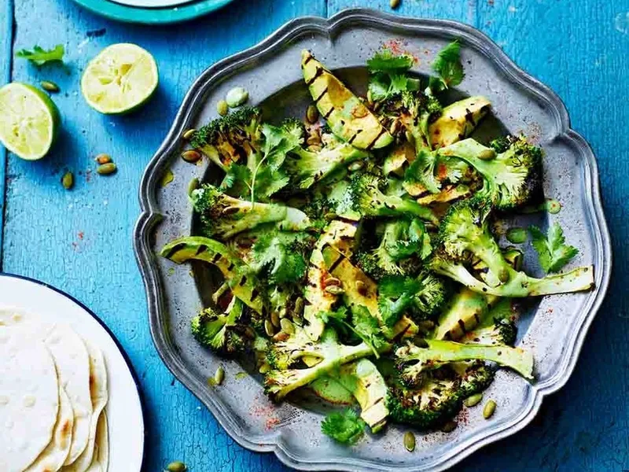

Griddled Avocado and Broccoli Tacos

Description
These super green tacos are light, bright, and full of flavor! The
griddled broccoli adds a nice charred flavor the compliments the smooth
silky avocado. Give them a try!
Ingredients
For 16 Tacos
- 50 g pumpkin seeds
- 1 head of broccoli
- olive oil
- 3 ripe avocados
- ground cayenne pepper
- 16 tacos
- 1 large bunch of fresh coriander (60g)
- 250 g ricotta cheese
- 1 splash of milk
- 1 clove of garlic
Cooking Steps
-
Place a griddle pan over a high heat, scatter in 50g of pumpkin seeds
and toast for 1 to 2 minutes, then remove to a bowl.
-
Cut 1 head of broccoli into 1cm slices, then toss in a little olive oil
and a pinch of sea salt and black pepper. Lay them on the hot griddle
and cook for 3 to 4 minutes on each side, or until charred and just
cooked through, you want them to retain a bit of bite.
- Peel, de-stone and slice 3 ripe avocados into wedges.
-
Remove the broccoli from the griddle and add the avocado wedges,
griddling until lightly charred on both sides.
-
For the dressing, put 45g of fresh coriander (stalks and all) into a
blender with 250g of ricotta and 1 splash of milk. Squeeze in the juice
from 2 limes and peel and finely grate in 1 clove of garlic.
-
Season with salt and pepper, blitz until combined, then spoon onto a
platter.
-
Top the dressing with the griddled veg and a drizzle of olive oil. Pick
over the remaining 15g of coriander leaves and sprinkle with the toasted
pumpkin seeds.
-
Finish with a sprinkling of cayenne pepper. Serve with a pile of tacos
and let everyone help themselves.